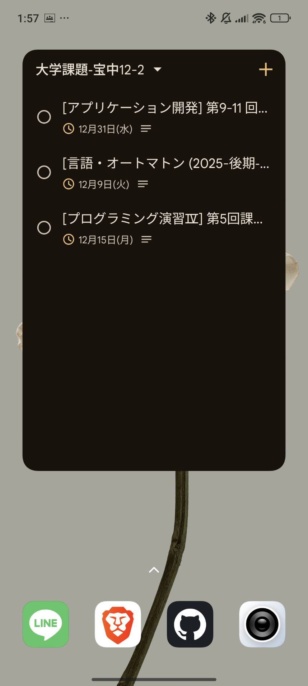

自動取得
毎日決まった時間にWebClassとClassroomをチェックします。
スマホ通知
Google Tasksアプリを入れれば、締め切り前に通知が届きます。
簡単設定
配布しているスプレッドシートのメニューから設定するだけ。
最初にお読みください
このシステムは、個人のGoogleアカウントと混ざると正しく動作しません。
必ず「シークレットウィンドウ（プライベートモード）」を使用してください。
シークレットウィンドウで開く
Chrome右上のメニューから「新しいシークレットウィンドウ」を選択し、大学のアカウントでログインしてからスプレッドシートを開いてください。
使い方
01
スプレッドシートをコピー
配布URLを開き、自分のGoogleドライブにコピーを保存します。
02
WebClass認証設定
メニューの「課題自動取得システム」から認証情報を設定します。
パスワードは安全に保存されます。
03
自動実行をオンにする
「Tasks・自動実行設定」から、通知を受け取りたいリスト名と時間を設定します。